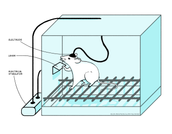
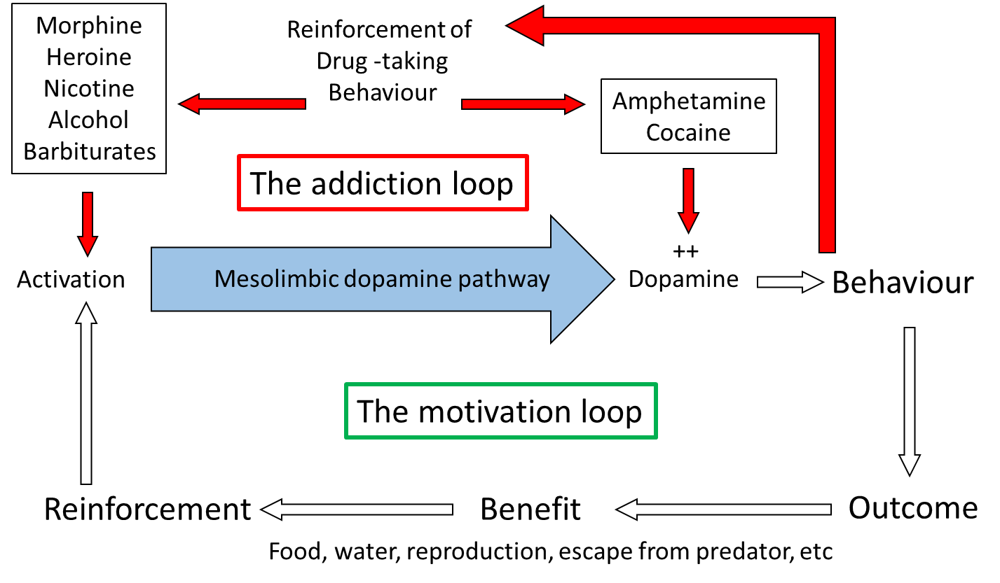

Addiction
Learning Objectives
- Appreciate the features of reward and reinforcement
- Understand how the effects of drugs on reinforced behaviours points to a critical role of dopamine
- Understand how abused drugs affect mesolimbic dopamine transmission
- Appreciate the link between drug self-administration and drug dependence (addiction).
What is addiction?
Drug addiction, or to give it its more scientific term, dependence, is the taking of a chemical substance (the drug) for non-nutritional and non-medical reasons, where the drug-taking behaviour is compulsive. An addict feels they have no control over taking the drug, but instead feels driven to take it. Their lives often become centred around acquiring and consuming the drug, to the detriment of behaviours necessary for survival – for example, eating, drinking water – and they often engage in risky or illegal behaviour in order to feed their drug habit. Addicts often develop a tolerance to the drug, such that they need more of the drug to produce the ‘high’. Drug dependence must be distinguished from drug use and drug abuse. Drug use is where the substance is taken in small quantities, relatively infrequently, and importantly with no damage to relationships or daily function. For example, people often enjoy a glass of wine with a meal, or a drink with friends. If drug use escalates to frequent and/or excessive taking of the substance, causing disruption to daily functioning or relationships, but without the compulsivity, this would be termed drug abuse. Drug dependence, as stated above, is similar to drug abuse, except that the drug-taking is compulsive, with the addict feeling they have no control over whether to take the drug.
There are four major stages of drug addiction: initiation, maintenance, abstinence and relapse, each of which are likely to be driven by different mechanisms. Initiation is the first stage, where a person takes the drug for the first time. The main factors which influence initiation are: the ‘pleasant’ feeling (hedonic impact) from taking the drug; overcoming stress; peer pressure and the desire to conform to a group; or simply to experiment. For many people, drug taking never progresses beyond this stage, and whether or not they take a drug is entirely a conscious decision.
However, where a person becomes dependent, or addicted, this moves on to the second stage: maintenance. Here the person no longer feels in control of the decision as to whether to take a drug, but rather feels a compulsion to take it. The maintenance stage can be long-lasting, and is very often accompanied by an increasing motivational drive to take the drug, which is driven by a process called sensitisation (see ‘Tolerance and sensitisation’ box below). However, there is rarely an accompanying increase in hedonic impact from taking the drug: indeed very often hedonic impact decreases, and the drugs may even become aversive.
Tolerance and sensitisation
These are forms of neuroadaptation which are important in many aspects of neuronal function, and are particularly important in understanding processes of drug addiction.
Tolerance refers to the process where a drug becomes less effective, that is, it produces a weaker response after repeated administration. Sensitisation, on the other hand, is where the drug becomes more effective over repeated administration.
Both processes are mediated through changes in cellular function, including:
- changes in neurotransmitter synthesis, storage and release,
- changes in receptor density,
- changes in reuptake and metabolism of transmitters,
- changes in second messenger signalling,
many of which probably involve upregulation or downregulation of specific gene expression.
However, at present we do not fully understand how these mechanisms are controlled. Interestingly, the processes involved in sensitisation are very long-lasting, and some have even suggested that they may be irreversible, accounting for the enduring changes that underlie maintenance of addiction. A link with mechanisms of learning has also been suggested by the observation that antagonists at NMDA-type glutamate receptors, given into VTA, prevent sensitisation. NMDA-receptors are known to be critically involved in neuroplasticity mechanisms of learning, and this evidence suggests that similar processes involving NMDA receptors may underlie drug-induced sensitisation.
Once a person has become dependent, it is likely that the addiction remains with them for the rest of their life: there is little evidence for true recovery. Therefore when an addict refrains from taking a drug, they are not normally considered to be ‘cured’ or ‘recovered’, but rather they are considered to be abstinent. This reflects the view that the addiction is still present, but is not expressed because the person no longer takes the drug. However, the motivational drive to take the drug – that is, the craving – may still be strong. This is underlined by evidence showing that physiological and neurochemical changes occurring in the brain with the development of dependence are largely irreversible, as we will see later. Therefore, abstinent addicts are very prone to restarting their drug taking, termed relapse. A single intake of the drug can reinstate the maintenance phase in an addict who may have been abstinent for many years, hence the requirement, in treatment programs for dependence, that the addict never take the drug. Relapse is driven by cravings in the individual, which may be brought about by stress or by exposure to people, items or situations associated to previous drug taking, emphasising the link between classical conditioning and drug taking.
When an addicted person stops taking a drug, they often experience withdrawal symptoms. These are behavioural changes, often opposite to the effects elicited by the drug, and can be very aversive. In the early stages of abstinence these withdrawal symptoms are particularly strong and can be extremely unpleasant. Thus, avoiding withdrawal symptoms provides a strong motivation to take the drug and can lead to relapse. However, as the period of abstinence increases the withdrawal symptoms subside, so reducing this as a motivation for reinstatement.
Brain motivation circuits and addiction
Many studies have been undertaken in experimental animals, particularly rats and mice, but also primates, to investigate the neural circuitry underlying addiction. These mostly focus on pathways controlling reinforcement and motivation often termed the reward pathway.
Reward or reinforcement?
Reward is a term widely used in the discussion of dopamine signalling in the mesolimbic pathway. Indeed, many publications refer to the mesolimbic pathway as the ‘reward pathway’. However, the term ‘reward’ has several problems in the scientific context. Reward is a pleasurable experience, and is subjective: what is pleasurable for one person may not be for another. It also raises problems of assessing pleasure in experimental animals: how do we know that an animal is enjoying an experience? Third, the term does not necessarily imply that it will change behaviour.
In scientific terms, for empirical research, we need to avoid subjective measures: far better to have objective measures. The term reinforcement refers to the ability of a stimulus, situation, or outcome, to elicit a behaviour. Reinforcement strengthens an animal’s future behaviour on exposure to the stimulus. It is an objective measure: we can simply measure changes in the behaviour, for example the number of operant lever presses. Importantly, also, reinforcement does not imply pleasure, so in measuring the behaviour, we don’t have to worry about whether the animal is enjoying the experience.
The discovery by Olds and Milner (1956) that rats would work by pressing a lever to receive mild electrical stimulation to a specific area of the brain, fuelled major research programs looking at this and related pathways in controlling motivation. They saw that the rats were motivated to stimulate areas of the mesolimbic pathway electrically: this pathway projects from cell bodies in the ventral tegmental area (VTA) along the axons of the mesolimbic pathway, to terminals located primarily in the nucleus accumbens.

Subsequent experiments have characterised the mechanism promoting the level pressing response in greater detail, but, importantly, they have emphasised the critical role of dopamine in driving the behaviour effect. Thus, amphetamine or cocaine, which enhance dopamine signalling, increase the lever press rate, whereas giving a dopamine antagonist reduces the lever press rate, indicating that the reinforcement signal driving the lever pressing behaviour is mediated through dopamine. It is important to note that the anatomical location of brain regions which support self-stimulation is very specific: if the electrodes are located outside these localised regions, animals will not self-stimulate. An interesting point here, in relation to the phenomena of addiction, is that in self-stimulation experiments such as these, animals will repeatedly press the lever to receive the stimulation rather than eating or drinking, indicating that the electrical stimulation is a very strong motivational drive which suppresses the drive to carry out behaviours critical for survival: addicts often neglect normal nutrition and self-care in order to maintain their drug-taking.
In a similar procedure, rats and mice will also press a lever in order to receive injections of certain drugs. In its simplest form the drugs are administered intravenously (i.v.), through an indwelling cannula in a blood vessel: therefore lever pressing gives an i.v. injection of the drug. In a modification of the design, drugs can be administered via a microinjection into local brain areas. There are a number of drugs which animals will administer intravenously, including amphetamine, cocaine, nicotine, morphine, heroin and ethanol, and they will also administer amphetamine or cocaine into the nucleus accumbens and morphine into the VTA. It should be emphasised that animals will only self-administer certain drugs: the vast majority of drugs do not support self-administration. Similarly, the brain regions where animals will self-administer the drugs, VTA and nucleus accumbens, are very specific and indicates the importance of the mesolimbic pathway.
The importance of the mesolimbic dopamine system can be confirmed with lesion experiments, using 6-hydroxy-dopamine (6-OHDA), a drug which specifically kills catecholamine (dopamine and noradrenaline) containing cells. Following lesions to the mesolimbic pathway, but not to other pathways, animals will no longer self-administer drugs. Furthermore, enhancing dopamine function by giving local injections of cocaine or amphetamine into nucleus accumbens also increases the lever pressing, supporting the role of dopamine in the lever-pressing response. Paradoxically, many experiments have shown that dopamine antagonists also increase the lever press rate. However, it was subsequently found that the dose was critical: at low doses the lever-press rate is increased, but at higher doses it is entirely abolished. This dose-dependence can be explained by considering that at low antagonist doses not all receptors are occupied and therefore increasing the amount of drug self-administered will overcome the effect of the antagonist, whereas at high antagonist doses, the receptors are completely blocked, and so no matter how much more drug is administered the effect of the antagonist cannot be overcome. So it is concluded that the motivational effects of these drugs is mediated via dopamine neurones in the mesolimbic pathway.
You will recall that stress is a major contributory factor to development of dependence and relapse in abstinent addicts, and the influence of stress can be seen in animals trained to self-administer. If rats that had previously been trained to lever-press to receive self-administration of cocaine are left drug-free for several weeks, they no longer press the lever when cocaine is once more available, modelling abstinence. If they then receive a foot shock, they do start pressing the lever again, reinstating the compulsive self-administration and paralleling the effect of stress on relapse in people. In the context of the role of stress in reinstatement, it is notable that this reinstatement is prevented by corticotropin-releasing hormone antagonists, emphasising the role of the hypothalamus-pituitary-adrenal axis mediated stress response to the process.
Measuring rodents’ operant behaviour, such as lever pressing, is a good way of measuring their level of motivation, and as we saw from the experiments above, they show strong motivation to receive stimuli which activate the dopaminergic mesolimbic pathway. However these are clearly very artificial behaviours: they do not mimic activities which the animals undertake naturally. But we just need to look in the wild at how much effort animals will put in to getting food, be it a predator chasing down a prey, or annual migrations to new feeding grounds. Animals have an innate motivation to pursue behaviours which are beneficial to survival, for example eating, drinking and reproducing. As such, motivational systems in the brain are highly evolved to reinforce behaviours which enhance animals’ ability to perform these actions. Stimuli associated with these action become strong predictors of outcome, and strong motivational cues to perform behaviours leading to consumption.
In the laboratory, too, motivation to pursue beneficial behaviours can be demonstrated: initial observations by B.F. Skinner in the 1940s, opened the way for many subsequent operant experiments where rats or mice pressed a lever in order to receive food or water or even a sexually receptive mate. Moreover, as with self-stimulation and self-administration, lesion and pharmacology experiments have shown the importance of dopamine in the mesolimbic pathway for controlling this behaviour. Thus, lever pressing to receive a natural reward (food, water) is abolished in animals with 6-OHDA lesions of the mesolimbic pathway, or by the application of dopamine receptor antagonists, and is enhanced by the administration of amphetamine or cocaine. So the mesolimbic pathway is clearly involved in motivation to undertake behaviours vital for survival, and self-stimulation and self-administration tap into this mechanism by promoting activity in the pathway either electrophysiologically or pharmacologically.
Direct neurochemical measurement in localised brain areas, primarily using brain microdialysis or fast-scan cyclic voltammetry (FSCV) (see ‘Measuring neurotransmitter release in the brain’ box, below) have shown that dopamine release in nucleus accumbens, but not in other dopaminergic terminal regions in the brain, is increased during appetitive behaviours. These behaviours include eating and drinking, and during electrical stimulation of the VTA, similar to that used in self-stimulation, therefore largely confirming the importance of dopamine in motivation processes. Importantly, also, drugs which support self-administration also increase dopamine release in nucleus accumbens preferentially over other regions. The mechanisms by which the different drugs increase mesolimbic dopamine function varies across the different drug types. Some, such as nicotine, morphine, heroin and alcohol activate the pathway by either direct or indirect actions on the dendrites and cell body in the VTA, while others, such as amphetamine and cocaine affect the reuptake of released dopamine in the terminal regions, including nucleus accumbens.
Considering the site of action of the different drugs accounts for why animals will self-administer morphine into the VTA and amphetamine and cocaine into the nucleus accumbens, as these are the regions where the respective drugs activate mesolimbic function. Therefore, although addictive drugs exhibit very different primary pharmacology, with only amphetamine and cocaine acting directly on the dopamine system, and also have very different primary behavioural effects (Table 1), they all share the ability to increase dopamine function selectively in the mesolimbic pathway and it is this action that is believed to underlie their motivational effects. The drugs ‘hijack’ the neural pathway in the brain which controls the animals’ motivation to pursue behaviours essential for survival, and instead motivate the individual to perform behaviours related to taking the drugs.
Measuring neurotransmitter release in the brain
Measurement of neurotransmitter release in localised brain areas during behaviour and/or in response to drugs is really important in understanding underlying neurotransmitter actions. Over the last few decades, two main methods have been employed, both of which can be used in awake, freely moving experimental animals.
Brain microdialysis involves implanting a small length of dialysis membrane into the brain, and perfusing it continuously with artificial cerebrospinal fluid (aCSF). Dissolved substances in the brain extracellular fluid pass through the membrane, by dialysis, into the aCSF, and can be measured typically by high performance liquid chromatography (HPLC). Second, fast-scan cyclic voltammetry (FSCV) measures the oxidation of chemicals when a voltage is applied to a carbon fibre microelectrode. Although it is possible to measure some other neuroactive compounds, the most widespread use of FSCV is to measure dopamine. Microdialysis has the advantage that many different compounds can be measured in a single sample, whereas FSCV is mainly restricted to a single compound, normally dopamine. However, microdialysis probes are comparatively large (typically 1 to 2 mm long, 0,5 mm diameter) and so have a relatively poor spatial resolution. FSCV, on the other hand, uses carbon fibre microelectrodes which are much smaller (typically 100 µm long, 10 µm diameter) which give a much higher spatial resolution and allow targeting of smaller brain sub-regions. Microdialysis also has relatively poor temporal resolution, as it requires collection of enough sample to be able to analyse: most studies use sample collection times of 1 to 10 minutes, although some have managed less than a minute. In contrast, FSCV typically makes 10 measurements per second. Therefore FSCV is able to pick up fast transient changes in response to specific stimuli, whereas microdialysis can only pick up slower more sustained changes.
Recent developments with genetic markers are opening the way to novel approaches to measuring many aspects of neurotransmitter function with high chemical specificity, spatial resolution and temporal resolution.

Conditioned place preference tests an animal’s preference for an environment which is associated with a reinforcer, and can be assessed using a two compartment testing box. Animals are trained over repeated sessions that one compartment contains a reinforcer (typically food, sucrose or water), whereas the other compartment does not. After several training trials, the place preference is tested in the absence of any reinforcer (that is, both compartments are empty). The animal is placed back in the testing box, and the time spent in each compartment is recorded. Animals spend more time in the previously reinforced compartment than in the control compartment, even though at test there is no reinforcer present.
This shows that the animal has learned which compartment of the test box contained the reinforcer, and it is motivated to visit that compartment in preference to the control compartment, even when the reinforcer is no longer present. This effect is:
- abolished by 6-OHDA lesions of the mesolimbic pathway;
- enhanced by drugs which increase dopamine, such as amphetamine and cocaine; and
- attenuated by dopamine receptor antagonists.
Therefore, the mesolimbic dopamine pathway is critical for expression of conditioned place preference.
In a variant of the procedure, instead of a natural reinforcer, drugs can be used. In this case, during training, the animal is given an injection of a drug and placed in one compartment or a saline injection and placed in the other compartment. At test, with no drug present, they show a preference for the compartment in which they have previously received the drug. The drugs which will induce place preference, including amphetamine, cocaine, morphine, heroin and alcohol, are the same ones which animals will self-administer, and all are potentially addictive drugs in people. One important aspect that the place preference experiments demonstrates is that animals learn about the environment in which they receive reinforcing stimuli, be it natural reinforcers or reinforcing drugs, and, given the choice, they return to that environment, even when the reinforcer is not present. This indicates that associative learning, or conditioning, is occurring between the reinforcer and the environment. Similar learning can also be demonstrated to specific cues: in the lever press experiments described above, if a neutral stimulus (e.g. a light) is presented immediately before the lever is made available, the animals will approach the lever when the light stimulus is presented alone, and they will try to press the lever, even when it is still retracted and unavailable.
Microdialysis and FSCV experiments have shown that, once this learning has taken place, dopamine release in nucleus accumbens is increased during the presentation of the light stimulus, even long after the withdrawal of the reinforcer. Therefore, animals learn to associate specific cues and environment to the reinforcer, such that they can evoke the both release on dopamine in nucleus accumbens and reinforced behaviour, even in the absence of the reinforcer. These behaviours in experimental animals strongly resemble behaviours seen in drug addicts, where cues associated with drug taking (e.g. an empty vodka bottle to an alcoholic or a needle to a heroine addict), or the environment they associate with the drug taking can be very strong motivational drivers, or cravings, to take the drugs. Interestingly these conditioned effects can long outlast the period of association in both experimental animals and in addicts: so cues and/or environment can trigger cravings in abstinent addicts even years after they last took the drug.
In the early stages, drug taking is not addictive: that is, people take the drugs through choice. A number of psychological factors originating in prefrontal cortex, including impulsivity and inhibitory self-control, have been shown to be vulnerability factors for drug taking. Thus, dysregulation of prefrontal control over mesolimbic circuits may underlie impaired inhibitory self-control exhibited by many addicts, while, high impulsivity, mediated through abnormalities of the orbitofrontal area of prefrontal cortex, may explain people’s choice of short-term gratification of drug taking over long-term benefits of abstinence.
However, at some stage there is a change from use or abuse to the compulsive drug use characteristic of dependence. As mentioned earlier, this change includes neuro-adaptive processes involving sensitisation of dopamine systems controlling motivation and seems to be largely irreversible, accounting for enduring cravings even after long periods of abstinence. Moreover, evidence has shown that there is a learned component to this process: experimental animals are more likely to show sensitisation (e.g. sensitisation of locomotor activity, mediated through mesolimbic dopamine activity) if tested in the same environment where the initial drug administration took place. In addition, previous sensitisation enhances the acquisition of self-administration and place preference, effects mediated through mesolimbic dopamine. With repeated drug administration, drugs may acquire greater and greater incentive value and become increasingly able to control behaviour. This may parallel the observation in drug addicts where places, acts or objects associated with drug-taking become especially powerful incentives.
Addictive drugs produce long-lasting changes in brain organisation. The brain systems that are sensitised include the dopaminergic mesolimbic pathway, responsible for the incentive salience (‘wanting’) of the drug or drug-associated cues. Systems mediating the pleasurable or euphoric effects of the drug (‘liking’) are not sensitised. Animal studies have looked at the mechanisms of sensitisation to repeated drug taking. Psychostimulants, including amphetamine and cocaine, cause increased locomotor activity in rodents, an effect which is mediated through the mesolimbic pathway: lesions of the mesolimbic pathway abolish it. On repeated systemic administration (i.e. intravenous, intraperitoneal or subcutaneous: where the drug accesses the whole brain), the hyperlocomotion induced by the drug increases, showing a sensitised response. The precise mechanism of the sensitisation is not certain, but it probably involves long-term and enduring neuro-adaptive changes in the cell body region in the VTA (see box below).
Localisation of neuroadaptation underlying sensitisation
Rats were given repeated local injections of amphetamine into either the cell body region of the mesolimbic pathway in the VTA, or the terminal region in the nucleus accumbens. A third control group received no injections.
Animals injected into the nucleus accumbens showed a hyperlocomotor response, which did not increase over repeated injections: that is, there was no sensitisation. Animals given injections into the VTA showed no behavioural response. This is not surprising, as the pharmacological effect of amphetamine is at the terminals, it increases release and blocks reuptake: therefore it is likely to be most effective in the terminal region. After these repeated local injections, animals were left for a week drug-free, then given a challenge dose of amphetamine systemically. All animals showed hyperlocomotion. Animals which had received repeated drug injections into nucleus accumbens showed a similar level of hyperlocomotion to the non-injected controls: that is, there was no sensitisation. However, animals which had received drug into the VTA showed an augmented response compared to the other groups, indicating that sensitisation had taken place.
Therefore, repeated injection into nucleus accumbens evoked a behavioural response, but not sensitisation, whereas repeated injection into VTA produced no behavioural response, but did cause sensitisation, providing evidence for the critical role of VTA in sensitisation.
In summary, there is strong evidence from studies in experimental animals that:
- dopamine signalling in the mesolimbic pathway drives motivational systems to promote behaviours critical for survival;
- addictive drugs impact on this system to promote behaviours associated with drug-seeking and drug taking;
- neuro-adaptation in this pathway accounts for the long-term, enduring nature of dependence and
- activity in this pathway driven by conditioned associations can cause cravings to take the drug even after long periods of abstinence.
Therefore activity in this pathway can account for many of the phenomena associated with addiction in people.
Models of addiction
Several models have been proposed to account for the features of addiction, prominent amongst which is the incentive sensitisation model, proposed by Robinson and Berridge in 1993. This develops ideas taken from two other prominent models, the opponent process model and the aberrant learning model, and it is worth considering these two models briefly first.
Aberrant learning model
According to the aberrant learning model, abnormally strong learning is associated with drug taking, through two distinct components of learning. First, explicit learning where the association between action (drug taking) and outcome (drug effect) is abnormally strengthened leading to drug taking because of an expectation of the hedonic impact, even when the drug no longer produces that effect. Second, implicit learning where the action-outcome relationships (as above) change to more automatic stimulus-response relationship (habit), meaning that the stimulus evokes the response irrespective of any conscious expectations about the outcome.
While this theory accounts for the motivational drive from stimuli associated with drug-taking and the ability of these stimuli to promote cravings, it does not account for the fact that most addicts do not report expectation of a positive hedonic effect. Therefore it seems unlikely that this could be the motivation for their drug seeking and taking. Similarly, it does not explain the compulsive nature of addiction – it implies that drug seeking and taking are purely automatic behaviours, whereas in fact they appear more as a motivational compulsion. Finally, it does not explain the behavioural flexibility shown by addicts. The theory would predict that if the normal route to drug taking were prevented, the addict would not be able to adapt behaviour in order to seek the drug from a different source or via a different process, whereas in fact addicts do show substantial behavioural flexibility in these circumstances.
Opponent process model
The opponent process model is well founded in neuroscience, as a mechanism for homeostatic control of many functions. It posits two processes, the A-process and the B-process which oppose each other: the A-process is activated by an external stimulus, leading to a change in functioning, and the B-process is the body’s reaction to the change brought about by the A-process to return to the set point level. In the context of drug taking, the A-process represents the direct effect of the drug, which triggers the B-process, the opponent process, which aims to restore the homeostatic state. The A-process leads to the hedonic state (‘high’) associated with taking a drug, while the B-process leads to the aversion from not taking the drug, for example the withdrawal symptoms. Over repeated drug taking, tolerance builds up to the A-process, accounting for the reduced hedonic impact of the drugs, while the B-process is strengthened, leading to withdrawal symptoms, which can only be eliminated by taking more of the drug. Thus the driving force for drug taking is to prevent the aversive withdrawal symptoms which occur when the A-process diminishes, but the B-does not. Thus, people who initially take drugs to gain a positive hedonic state, are subsequently motivated to continue drug taking to avoid a negative hedonic state.
This accounts for the drive to take the drug to achieve a homeostatic state, but does not account for evidence showing that avoiding the negative hedonic state of withdrawal is not a major motivator for drug taking. Indeed, many addictive drugs do not evoke strong withdrawal symptoms. Also, withdrawal symptoms are maximal in the days following abstinence, yet cravings for the drug, and reinstatement, even after a small dose, can last for years – in alcoholics who have been abstinent for years, a single alcoholic drink can reinstate the addictive behaviour.
Incentive sensitisation model
The incentive sensitisation model derives certain aspects from the above models, but puts them into a motivational framework. It delineates two distinct components of reinforcement – hedonic impact (‘liking’) and incentive salience (‘wanting’), which are dissociable behaviourally and physiologically. Robinson & Berridge use the terms ‘liking’ and ‘wanting’ (in quotation marks) to represent these very clearly defined behavioural parameters. Thus, when given in quotation marks, they represent much more specific scientific terms than the everyday usage of the two words. Incentive learning, both explicit and implicit, which forms the core of the aberrant learning model, provide the route through which stimuli associated with the behaviour acquire incentive salience – they become salient, attractive and wanted – and guide behaviour.
The incentive sensitisation model focusses on how drug cues trigger excessive motivation for drugs, which drives drug seeking and drug taking behaviour. The subjective pleasure derived from taking the drug, the hedonic impact or ‘liking’, is due the direct psychopharmacological action of the drug in producing a ‘high’, reducing social anxiety and/or, increasing socialisation. Incentive salience, or ‘wanting’ on the other hand, represents the motivational importance of stimuli, making otherwise unimportant stimuli able to attract attention, making them attractive and ‘wanted’. The critical feature of the model is the dissociation between these two processes, both behaviourally and physiologically, and that the incentive salience, or ‘wanting’ is sensitised over repeated drug taking, so increasing the driving force to take drugs, whereas the hedonic impact, or ‘liking’, is unaffected, or may even reduce, through tolerance. Under normal conditions of natural reward the two processes work together to motivate behaviours which are beneficial to survival, it is only in un-natural situations such as taking of addictive drugs that there is a dissociation between the actions of the two systems, such that drugs can become exceptionally strong motivators of drug-seeking and drug-taking behaviour. This dissociation of the two components accounts for the observation that addicts continue to seek and take drugs, even when they derive little or no pleasure from it, and when they are fully aware of the physical, emotional and social damage it is causing. Importantly, the dissociation between ‘wanting’ and ‘liking’ has also been demonstrated experimentally, indicating that it is not simply a theoretical concept, but does actually occur.
The dissociation between ‘wanting’ and ‘liking’
In a series of experiments designed to test whether a dissociation between ‘wanting’ and ‘liking’ could be demonstrated experimentally, Berridge and co-workers devised a scoring scheme for measuring facial expressions related to palatability across several species, through which they assessed ‘liking’ (Figure 6.3). Amphetamine was shown to have no effect on ‘liking’, and may have increased aversion.
In order to assess ‘wanting’, a lever press experiment was used in the same animals. Animals were first trained to press a lever for sucrose reward, then trained that one auditory stimulus signalled that the a lever press will deliver sucrose (CS+) but that a different auditory stimulus signalled that the level press will not deliver sucrose (CS-). Level press responses to CS+ and CS- were measured as an index of ‘wanting’.
Amphetamine microinjection selectively enhanced lever pressing for sucrose by the CS+ auditory stimulus, but not by the CS- auditory stimulus, indicating that amphetamine selectively enhanced the motivational element, ‘wanting’. Therefore amphetamine had no effect on, or perhaps decreased, ‘liking’, but enhanced ‘wanting’, providing experimental evidence for the dissociation of the two which forms the basis of the incentive.
Figure 6.3 depicts representative hedonic tongue protrusions (reaction to sweet tastes) and aversive gapes (reaction to bitter tastes) from adult rat, young primate, and infant human (after Berridge).

Summary
(a) Increasing concentrations of amphetamine cause a small decrease in hedonic reaction, and an increase in aversive reaction, showing that amphetamine does not increase ‘liking’: indeed, it decreases it.
(b) Amphetamine causes an increase in responding to the auditory stimulus which has been paired with sucrose (CS+), but not to the auditory stimulus that was not paired with sucrose (CS-), showing that amphetamine increases motivational drive, that is ‘wanting’.
The mesolimbic dopamine pathway is primarily involved in control of incentive salience, while other parts of the basal ganglia circuitry, including those using opioids and acetylcholine, control the hedonic impact. This accounts for the role of dopamine is in the incentive salience aspect, but not the hedonic impact aspect: drugs which enhance dopamine function increase the incentive salience (‘wanting’), increasing the animals motivation to pursue the goal, without increasing the hedonic impact (‘liking’). While ‘liking’ of the drug may decrease with repeated exposure (probably due to tolerance), the motivation to take the drug increases through sensitisation of the incentive salience (incentive sensitisation). Thus the model explains the dissociation between the pleasure received from taking the drug, and the motivational drive to take it. The sensitisation of the incentive salience is similar to habit learning (aberrant learning model), but is distinguished from it by the fact that it is only one component of the response which is sensitised. Related to this, work from Everitt, Robbins and co-workers suggest that the switch to compulsive drug taking which characterises dependence may be mediated by a shift in the specific dopamine pathway controlling the response, from the neurones terminating in nucleus accumbens, when responses are primarily goal directed, to neurones terminating more dorsally in the dorsal striatum when responses become compulsive (e.g. Everitt et al, 2001).
Addictive behaviours
There are a number of behaviours which share a lot of features in common with drug addiction. Behaviours like gambling and exercise can become compulsive with individuals carrying out the behaviours to the detriment of normal daily function or family relationships. A common feature with these behaviours is a dopaminergic component to the motivation, which may include activation of endorphin (an endogenous opioid, related to morphine) systems which in turn activate the mesolimbic dopamine pathway. Therefore some of these so called ‘addictive behaviours’ share many of characteristics of drug addiction, and evidence suggests that they may share similar neural mechanisms. A major research focus is aimed at identifying whether they are indeed different manifestations of the same process or different processes.
Treatment
Treatment options for drug addiction are fairly limited at present. The best long-term therapy is abstinence, although, as has been discussed earlier, people, specific cues and environments associated with drug taking can produce very strong cravings, often leading to relapse, even after extended periods of abstinence – you will recall that, in rats, stimuli associated with reinforcement (e,g, drug administration) evoke dopamine release in nucleus accumbens long after the withdrawal of the reinforcer. In all therapeutic strategies for treating addiction, a vital consideration is that the individual must recognise that they have an addiction and they must be motivated to overcome it. Treatments can be physically and emotionally demanding, and without the motivation to stop, treatment is rarely successful.
Psychological therapies have proven fairly successful in sustaining abstinence. Cognitive behaviour therapy (CBT) helps recognize unhealthy behavioural patterns, identify triggers which may potentially lead to relapse, and develop coping strategies to overcome them. This may also include contingency management, which reinforces the positive aspects of avoiding drugs through specific rewards. Stepped management schemes are a form of group therapy which identifies negative consequences of addiction and through support networks develops strategies to overcome them. In the longer term, psychological therapies also look at aspects in the person’s life beyond their addiction, and particularly any other pathological conditions they may experience. A key aim is to improve stress management, since we have seen that stress is a major precipitatory factor in relapse.
For psychological therapies to be effective, the individual must first stop taking the drugs, a process often called detoxification: given the compulsive nature of drug addiction, this in itself can be a major challenge. The four main approaches used are drug elimination, agonist therapy, antagonist therapy or aversion therapy. Pharmacological treatments which reduce the impact of withdrawal symptoms and cravings can also help during the detoxification processes.
Drug elimination is where the person simply does not take the drug any more. Sometimes the drug is simply withdrawn, in a single step (e.g. very often when smokers give up smoking), but more often, particularly for more serious addictions, the daily intake of drug is slowly reduced under clinically controlled conditions, until the addict is no longer dependent on the drug. One of the main problems with this approach is that the person normally experiences withdrawal symptoms, which can be extremely unpleasant in some cases, and are a major motivator to relapse into a drug-taking habit.
Antagonist therapy is where an antagonist for the addictive drug is given to block the action of the drug. This form of therapy is rarely used as it induced very severe withdrawal effects, so much so that when antagonist therapy is used, the individual is normally anaesthetised or heavily sedated. Agonist therapy is probably the most widely used treatment for coming off drugs. In this case an agonist for the addicted drug, or in some cases the drug itself, is given but in a very controlled way, reducing the amount given over a period of time: normally also the drugs and/or route of delivery is less harmful. Finally, aversion therapy can be effective in some cases, but is not widely used. This is where drug taking is paired with an aversive stimulus, such that a conditioned association is made between the drug and the aversive stimulus. For example an emetic drug is given alongside the addicted drug to induce sickness, making the addicted drug-taking aversive – you will remember the important role of conditioning in the development of addiction: well, it can also be used to treat it.
Key Takeaways
- Drug addiction is the compulsive use of drugs, to the detriment of daily functioning and relationships.
- Drugs which can become addictive have a wide variety of primary pharmacology, but all share the property that they provoke increased dopamine release in the mesolimbic pathway projecting from VTA in the midbrain to the nucleus accumbens in the forebrain.
- Many behavioural procedures in experimental animals have shown that this pathway is important in motivation and that animals show a strong motivation to work (e.g. press a lever) in order to receive injections of drugs with addictive potential, providing a link between natural motivation networks and addiction.
- The incentive sensitisation model accounts for the phenomena of addiction by proposing a dissociation between motivation and hedonia, which can be demonstrated experimentally, and which accounts for the observation that drug addicts often report a heightened drive to take drugs, yet the enjoyment from taking them is diminished.
References and further reading
Berridge, K. C., & Robinson, T. E. (1998). What is the role of dopamine in reward: hedonic impact, reward learning, or incentive salience? Brain Research Reviews, 28(3), 309-369. https://doi.org/10.1016/S0165-0173(98)00019-8
Caine, S. B., Negus, S. S., Mello, N. K., Patel, S., Bristow, L., Kulagowski, J., Vallone, D., Saiardi, A., & Borrelli, E. (2002). Role of dopamine D2-like receptors in cocaine self-administration: studies with D2 receptor mutant mice and novel D2 receptor antagonists. The Journal of Neuroscience, 22(7), 2977-2988. https://doi.org/10.1523/JNEUROSCI.22-07-02977.2002
Di Chiara, G. (1999). Drug addiction as dopamine-dependent associative learning disorder. European Journal of Pharmacology, 375(1–3), 13-30. https://doi.org/10.1016/S0014-2999(99)00372-6
Di Chiara, G., & Imperato, A. (1988). Drugs abused by humans preferentially increase synaptic dopamine concentrations in the mesolimbic system of freely moving rats. Proceedings of the National Academy of Sciences of the United States of America [PNAS] 85(14), 5274-5278. https://doi.org/10.1073/pnas.85.14.5274
Everitt, B. J., Dickinson, A., & Robbins, T. W. (2001). The neuropsychological basis of addictive behaviour. Brain Research Reviews, 36(2–3), 129-138. https://doi.org/10.1016/S0165-0173(01)00088-1
Everitt, B. J., & Robbins, T. W. (2016). Drug addiction: Updating actions to habits to compulsions ten years on. Annual Review of Psychology, 67(1), 23-50. https://doi.org/10.1146/annurev-psych-122414-033457
Franken, I. H. A. (2003). Drug craving and addiction: integrating psychological and neuropsychopharmacological approaches. Progress in Neuro-Psychopharmacology and Biological Psychiatry, 27(4), 563-579. https://doi.org/10.1016/S0278-5846(03)00081-2
Goodman, A. (2008). Neurobiology of addiction: An integrative review. Biochemical Pharmacology, 75(1), 266-322. https://doi.org/10.1016/j.bcp.2007.07.030
Heilig, M., MacKillop, J., Martinez, D., Rehm, J., Leggio, L., & Vanderschuren, L. J. M. J. (2021). Addiction as a brain disease revised: Why it still matters, and the need for consilience. Neuropsychopharmacology, 46(10), 1715-1723. https://doi.org/10.1038/s41386-020-00950-y
Kalivas, P. W., & Weber, B. (1988). Amphetamine injection into the ventral mesencephalon sensitizes rats to peripheral amphetamine and cocaine. Journal of Pharmacology and Experimental Therapeutics, 245(3), 1095-1102.
Koob, G.F. (2005). The neurocircuitry of addiction: Implications for treatment. Clinical Neuroscience Research, 5(2-4), 89-101. https://doi.org/10.1016/j.cnr.2005.08.005
Koob, G. F., & Volkow, N. D. (2009). Neurocircuitry of addiction. Neuropsychopharmacology, 35, 217-238. https://doi.org/10.1038/npp.2009.110
Koob, G. F., & Volkow, N. D. (2016). Neurobiology of addiction: A neurocircuitry analysis. The Lancet Psychiatry, 3(8), 760-773. https://doi.org/10.1016/S2215-0366(16)00104-8
McKendrick, G., & Graziane, N. M. (2020). Drug-induced conditioned place preference and its practical use in substance use disorder research. Frontiers in Behavioral Neuroscience, 14, 582147. https://doi.org/10.3389/fnbeh.2020.582147
Negus, S. S., & Miller, L. L. (2014). Intracranial self-stimulation to evaluate abuse potential of drugs. Pharmacological Reviews, 66(3), 869-917. https://doi.org/10.1124%2Fpr.112.007419
Olds, J., & Milner, P. (1954). Positive reinforcement produced by electrical stimulation of septal area and other regions of rat brain. Journal of Comparative and Physiological Psychology, 47(6), 419. https://doi.org/10.1037/h0058775
Robinson, T. E., & Berridge, K. C. (1993). The neural basis of drug craving: An incentive-sensitization theory of addiction. Brain Research Reviews, 18(3), 247-291. https://doi.org/10.1016/0165-0173(93)90013-P
Robinson, T. E., & Berridge, K. C. (2001). Incentive-sensitization and addiction. Addiction, 96(1), 103-114. https://doi.org/10.1046/j.1360-0443.2001.9611038.x
Schultz, W., & Dickinson, A. (2000). Neuronal coding of prediction errors. Annual Review of Neuroscience, 23, 473-500. https://doi.org/10.1146/annurev.neuro.23.1.473
Vezina, P. (1993). Amphetamine injected into the ventral tegmental area sensitizes the nucleus accumbens dopaminergic response to systemic amphetamine: An in vivo microdialysis study in the rat. Brain Research, 605(2), 332-337. https://doi.org/10.1016/0006-8993(93)91761-G
Wise, R. A. (1998). Drug-activation of brain reward pathways. Drug and Alcohol Dependence, 51(1–2), 13-22. https://doi.org/10.1016/S0376-8716(98)00063-5
Wyvell, C. L., & Berridge, K. C. (2000). Intra-accumbens amphetamine increases the conditioned incentive salience of sucrose reward: Enhancement of reward “wanting” without enhanced “liking” or response reinforcement. Journal of Neuroscience, 20(21), 8122-8130. https://doi.org/10.1523/JNEUROSCI.20-21-08122.2000